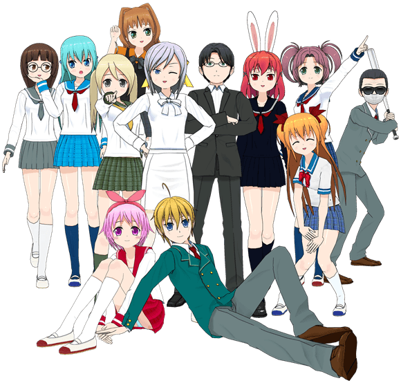

{% include badges.html %}
{% include badges.html %}
Manga are comics created in Japan. But wait! Once it made in Japan than it must be in Japanese language! Someone has to translate them to English! Is one man enough for this? Has team purely business relationships? Whether all simple and clear? Is it true that the process of translating boring??
"One Manga Day" is a short visual novel, originally written in Russian. Engine is RenPy. Graphics made in Manga Maker Comipo. Music made in MAGIX Music Maker 2014.
{% include badges.html %}
